1阿里巴巴集团 Qwen 团队 2爱丁堡大学 3斯坦福大学
4麻省理工学院 5清华大学
门控机制已得到广泛应用，从早期的 LSTM（Hochreiter & Schmidhuber, 1997）和 Highway Networks（Srivastava et al., 2015），到近期的 SSM（Gu & Dao, 2023）、线性 attention（Hua et al., 2022），以及 softmax attention（Lin et al., 2025）。然而，现有文献很少考察门控的具体作用。在本研究中，我们开展全面实验，系统研究通过门控增强的 softmax attention 变体。具体而言，我们对在 3.5 万亿 token 数据集上训练的 15B MoE 模型和 1.7B 稠密模型的 30 多种变体进行了全面比较。我们的核心发现是，一项简单的修改——在 SDPA 之后应用每个头独立的 sigmoid 门控——能够持续提升性能。这项修改还增强了训练稳定性，允许更大的学习率，并改善了扩展特性。通过比较不同的门控位置和计算变体，我们将其有效性归因于两个关键因素：（1）在 softmax attention 的低秩映射上引入非线性；（2）应用依赖查询的稀疏门控分数来调节 SDPA 输出。值得注意的是，我们发现这种稀疏门控机制能够缓解“attention sink”（attention sink），并增强长上下文外推性能；我们还发布了相关代码和模型，以促进后续研究。
门控机制在神经网络中已十分成熟。LSTM（Hochreiter & Schmidhuber, 1997）、Highway Networks（Srivastava et al., 2015）和 GRU（Dey & Salem, 2017）等早期架构率先利用门控来控制跨时间步或跨层的信息流，并改善 gradient 传播。这一原则在现代架构中仍然延续。近期的序列建模工作，包括 SSM（Gu & Dao, 2023; Dao & Gu, 2024）和 attention 机制（Hua et al., 2022; Sun et al., 2023; Qin et al., 2024a; Yang et al., 2024b; Lin et al., 2025），普遍应用门控，通常用于调节 token 混合组件的输出。尽管门控机制得到了广泛采用，并取得了经验上的成功，但除最初的直观解释之外，其功能与影响仍未得到充分探索。
理解不足会妨碍我们评估门控的真实贡献，尤其是在它与其他架构因素混杂时。例如，虽然 Switch Heads（Csordas et al., 2024a;b）引入 sigmoid 门控来选择 top-K attention 头专家，但我们的实验揭示了一个有趣的发现（附录 A.1）：即使缩减为单个专家，性能仍有显著提升，此时门控只是调节 value 输出。这强烈表明，门控本身具有独立于路由机制的显著内在价值。同样，Native Sparse Attention（NSA）（Yuan et al., 2025）虽然展示了整体性能提升，却没有将其门控机制的贡献与稀疏 attention 设计本身的作用分离。这些考虑凸显出，有必要严格区分门控与其他架构组件的作用。
在本研究中，我们考察标准 softmax attention（Vaswani, 2017）中的门控机制（第 2.2 节）。具体而言，我们在不同位置引入门控（图 1）：query（G4）、key（G3）和 value 投影（G2）之后；SDPA 输出之后（G1）；以及最终的稠密输出层之后（G5）。我们探索的门控变体包括逐元素与逐头、各头独立与各头共享，以及加法与乘法形式。我们发现：（i）在 SDPA 输出上应用各头独立的门控（G1）能带来最显著的性能提升（例如，PPL 最多降低 0.2，MMLU 提升 2 个点）；（ii）SDPA 输出门控还能够改善训练稳定性，几乎消除 loss spike，允许更大的学习率，并增强模型的可扩展性。
我们识别出门控有效性的两个主要因素：（\(i\)）非线性。两个连续的线性层——value（\(W_{V}\)）和稠密（\(W_{O}\)）投影——可以改写为一个低秩（接下页）
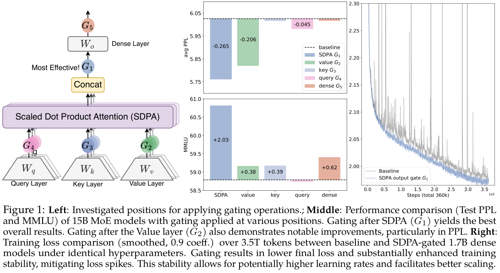
（接上页）线性投影。因此，在 G1 或 G2 位置通过门控引入非线性，可以提高这一低秩线性变换的表达能力（第 4.1 节）。（ii）稀疏性。虽然非线性门控变体能够持续提升性能，但我们观察到，它们带来的增益各不相同。我们的进一步分析表明，门控分数显著的稀疏性是另一个关键因素，它为 SDPA 输出引入了依赖输入的稀疏性（第 4.2 节）。此外，稀疏门控能够消除 attention sink（Xiao et al., 2023）：最初的 token 在 attention 分数中占据不成比例的主导地位（图 2，第 4.3 节）。先前工作（Xiao et al., 2023; Sun et al., 2024; Gu et al., 2024）将 attention sink 解释为非负 softmax 归一化导致的冗余 attention 累积。我们通过实验验证，当在 SDPA 输出上应用依赖查询的稀疏门控时，我们的稠密模型和 MoE 模型（在 3.5T token 上训练）均不出现 attention sink。此外，这些模型在长度泛化方面表现更好，在 RULER（Hsieh et al., 2024）上取得了超过 10 个点的提升（第 4.4 节）。
总之，我们的工作强调了标准 attention 层中的门控对模型性能和行为的影响。通过评估门控变体，我们揭示了它们引入非线性与稀疏性、消除 attention sink 的能力。这些发现加深了我们对 gated attention 机制的理解。我们将开源无 attention sink 的模型，以推动后续研究。
给定输入 \(X \in \mathbb{R} ^{n\times d_{model}}\)，其中 \(n\) 为序列长度，\(d_{model}\) 为模型维度，Transformer attention 层（Vaswani, 2017）的计算可以分为四个阶段。
QKV 线性投影：利用学习得到的权重矩阵 \(W_{Q}\)、\(W_{K}\)、\(W_{V} \in \mathbb{R} ^{d_{model}\times d_{k}}\)，将输入 \(X\) 线性变换为查询 \(Q\)、键 \(K\) 和值 \(V\)，其中 \(Q\)、\(K\)、\(V \in \mathbb{R} ^{n\times d_{k}}\)：
Q = XWQ，K = XWK，V = XWV。 (1)
SDPA：计算查询与键之间的 attention 分数，随后进行 softmax 归一化。输出为值的加权和：
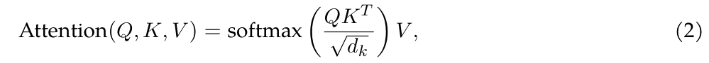
其中 \(QK^{T}/\sqrt{d_{k}} \in \mathbb{R} ^{n\times n}\) 表示缩放后的点积相似度矩阵，softmax(·) 确保 attention 权重非负，且每一行的权重之和为 1。
多头拼接：在 MHA 中，上述过程由 \(h\) 个头并行重复执行，每个头都有自己的投影矩阵 \(W^{i}_{q}\)、\(W^{i}_{k}\)、\(W^{i}_{v}\)。所有头的输出被拼接起来：
MultiHead(Q, K, V) = Concat(head1, …, headh)， (3)
其中 \(head_{i} = \operatorname{Attention}(QW^{i}_{Q}, KW^{i}_{K}, VW^{i}_{V})\)。
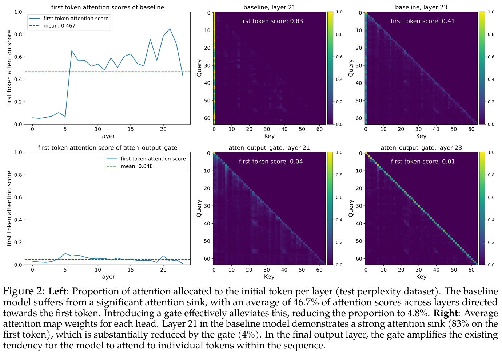
最终输出层：拼接后的 SDPA 输出通过输出层 \(W_{o} \in \mathbb{R} ^{hd_{k}\times d_{model}}\)：
O = MultiHead(Q, K, V)Wo。 (4)
门控机制形式化为：
Y′ = g(Y, X, Wθ, σ) = Y ⊙ σ(XWθ)， (5)
其中 \(Y\) 是待调节的输入，\(X\) 是用于计算门控分数的另一个输入1，\(W_{\theta}\) 表示门控的可学习参数，\(\sigma\) 为激活函数（例如 sigmoid），\(Y\)′ 为门控后的输出。门控分数 \(\sigma (XW_{\theta})\) 实际上充当动态过滤器，通过选择性地保留或抹除 \(Y\) 的特征来控制其信息流。
在本研究中，我们全面考察 attention 层内门控机制的若干变体。我们的探索重点包括五个方面：
除非另有说明，我们使用各头独立的乘法门控，采用 sigmoid 激活函数（\(\sigma (x) = 1/(1 + e^{-x})\)）。
1 我们采用预归一化之后的隐藏状态作为 X。
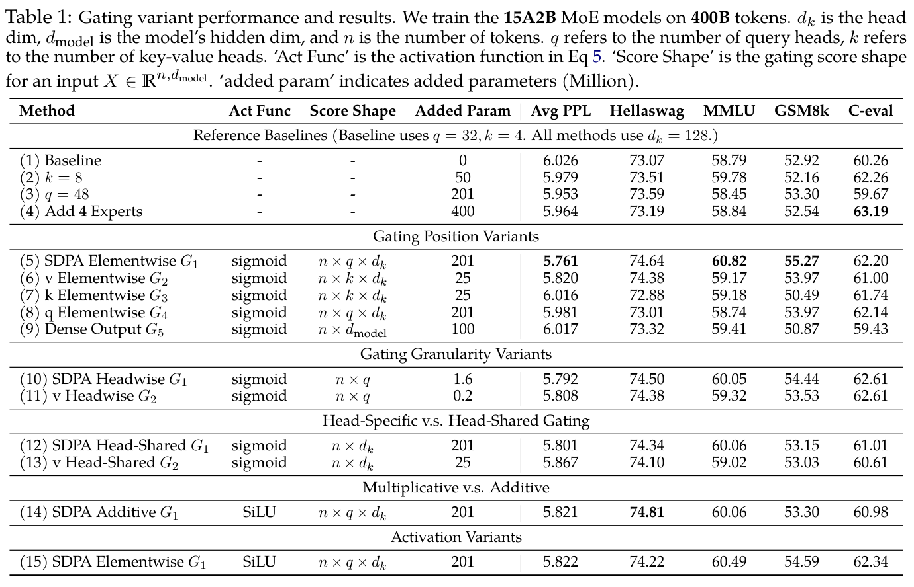
模型架构与训练设置。我们在 MoE 模型（总参数量 15B，激活参数量 2.54B，记为 15A2B）和稠密模型（总参数量 1.7B）上开展实验。15A2B MoE 模型共使用 128 个专家，采用 top-8 softmax 门控、细粒度专家（Dai et al., 2024）、全局 batch LBL（Qiu et al., 2025）以及 z-loss（Zoph et al., 2022）。Attention 部分采用 GQA（Ainslie et al., 2023）。我们在 3.5T 高质量 token 的子集上训练模型，内容涵盖多语言、数学和通用知识。上下文序列长度设为 4096。更详细的配置，如学习率和 batch 大小（bsz），将在各部分介绍。其他超参数采用 AdamW 优化器的默认值。由于门控引入的参数量和 FLOPs 较小，门控带来的实际运行时间延迟低于 2%。
评估。我们在常用基准上测试少样本结果，包括用于英语的 Hellaswag（Zellers et al., 2019）、用于通用知识的 MMLU（Hendrycks et al., 2020）、用于数学推理的 GSM8k（Cobbe et al., 2021）、用于编程的 HumanEval（Chen et al., 2021），以及用于中文能力的 C-eval（Huang et al., 2024）和 CMMLU（Li et al., 2023）。我们还报告了在多种留出测试集上的语言建模 PPL，涵盖英语、中文、代码、数学、法律和文学等领域。
我们首先在训练高效的 MoE-15A2B 模型上比较不同 gated attention 层的结果。所有模型均使用同一调度器：在 1k 步内 warmup 至最大学习率 2e-3，然后通过余弦衰减至 3e-5。全局 bsz 为 1024，共进行 100k 个优化步骤。结果汇总于表 1。为公平比较，除原始 MoE 基线（第 1 行）外，我们还加入参数扩展方法，包括增加 key-value 头数（第 2 行）、增加 query 头数（第 3 行），以及同时增加专家总数和激活专家数（第 4 行）。这些方法引入的参数量与门控机制相当或更多。
从表 1 中，我们观察到：（i）SDPA 和 value 输出门控有效。在 SDPA 输出（G1）或 value 映射（G2）处插入门控最为有效，相比其他变体能获得更低的 PPL 和更好的整体基准表现。我们将在第 4.2 节进一步研究这两个位置的门控为什么有效。（ii）各头独立的门控很重要。在 G1 和 G2 处应用逐头门控，只引入极少的额外参数（MoE-15A2B 模型低于 2M），但仍带来显著提升（第 10、11 行）。在不同 attention 头之间共享门控分数时（我们沿 query（接下页）
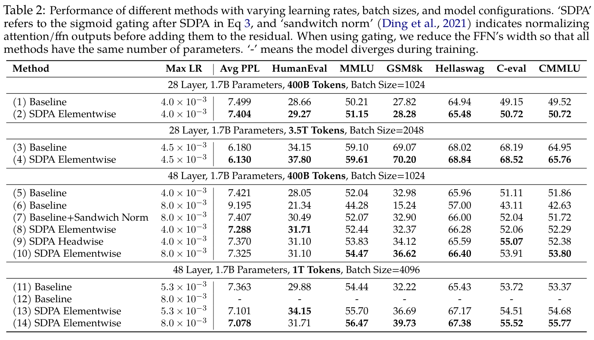
（接上页）头维度 \(q\) 求平均，将原始 \(n \times q \times d_{k}\) 分数变为 \(n \times d_{k}\) 分数），基准上的提升小于逐头门控带来的提升（第 12 行对比第 10 行，第 13 行对比第 11 行）。这凸显出，为不同 attention 头应用不同门控分数的重要性。（iii）乘法门控更优。加法 SDPA 输出门控虽然比基线有所提升，但表现不如乘法门控。（iv）sigmoid 激活更好。将最有效门控配置（第 5 行）中的激活函数替换为 SiLU（第 15 行），会使提升幅度减小。
总体而言，在 value 层（G2）和 SDPA 输出（G1）处增加门控，可使 PPL 降低超过 0.2，优于各种通过增加参数量实现扩展的基线。不过，G1 处的门控能够取得更好的 PPL 和基准结果。只要不同的头获得不同的门控分数，门控粒度和激活函数选择的影响就相对较小。我们将在分析部分（第 4.2 节）进一步探讨这些观察背后的原因。
我们还遵循 Yang et al.（2024a），在稠密模型上开展实验，以验证 SDPA 输出 sigmoid 门控。使用门控时，我们减小 FFN 的宽度，以保持参数规模。大多数实验使用为基线优化的超参数。例如，对于在 400B token 上训练的 1.7B 模型，我们使用最大学习率 4e-3 和 bsz 1024。在 3.5T token 上训练时，我们将最大学习率提高至 4.5e-3，bsz 提高至 2048。先前工作已表明，增加网络深度、采用较大学习率和较大 batch，虽然能够显著提升模型性能（McCandlish et al., 2018; Wang et al., 2022; D’Angelo et al., 2024）及分布式训练效率，但也经常引入训练不稳定性（Wang et al., 2022; Zeng et al., 2022; Takase et al., 2023）。我们观察到，应用门控机制能够明显减少训练期间 loss spike 的出现（Chowdhery et al., 2023; Takase et al., 2023），表明门控在增强训练稳定性方面具有潜力。受这一发现启发，我们引入另一种实验设置，增加层数、提高最大学习率并增大 batch，以进一步探究门控的稳定作用。
表 2 表明：（\(i\)）门控在多种设置下均有效。在不同模型配置（第 1 行对比第 2 行，第 5 行对比第 8 行）、训练数据（第 3 行对比第 4 行）和超参数（第 11 行对比第 13 行）下，应用 SDPA 输出门控都能持续带来收益。（ii）门控提高稳定性并促进扩展。在 3.5T token 设置下，门控提高了训练稳定性，大幅减少 loss spike（图 1，右）。提高最大学习率时，基线会遇到收敛问题（第 6、12 行）。虽然增加 sandwich norm（Ding et al., 2021）可以恢复收敛，但提升微乎其微。相比之下，提高带门控模型的最大学习率，则能带来明显的改善。
总之，我们认为 SDPA 逐元素门控是增强 attention 机制最有效的方法。将这一方法应用于稠密 Transformer，进一步表明门控能够支持采用更大 batch 和更大学习率的稳定训练，从而改善性能。
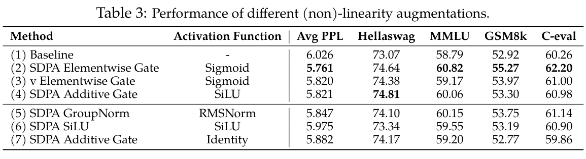
在本节中，我们通过一系列实验，探究为何如此简单的门控机制能够显著改善性能和训练稳定性。根据分析，我们得到以下结论：（1）增强非线性的门控操作能够持续带来性能增益（第 4.1 节）；（2）最有效的 SDPA 逐元素 G1 门控为 SDPA 输出引入了强烈的、依赖输入的稀疏性（第 4.2 节），进而帮助消除“attention sink”现象。
受到先前在 SDPA 输出上使用分组归一化的工作（Sun et al., 2023; Ye et al., 2024）启发，我们在与第 3.2.1 节相同的设置下，在拼接之前对每个 attention 头的输出独立应用 RMSNorm（Zhang & Sennrich, 2019）。如表 3 第 5 行所示，几乎不引入额外参数的 RMSNorm 同样能使 PPL 显著降低。
在 MHA 中，第 i 个 token 对应第 k 个头的输出可以表示为：
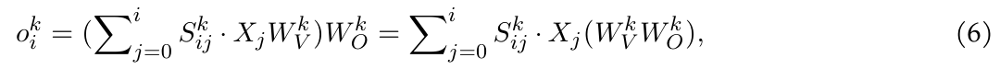
其中 \(W^{k}_{O}\) 是输出层 \(W_{O}\) 中对应第 \(k\) 个头的参数2。这里，\(S^{k}_{ij}\) 表示第 \(k\) 个头中第 \(i\) 个 token 对第 \(j\) 个 token 的 attention 分数，\(X_{j}\) 是 token \(j\) 的 attention 输入，\(X_{j}W^{k}_{V}\) 表示 token \(j\) 在第 \(k\) 个头中的 value 输出。由公式 6 可知，由于 \(d_{k} < d_{model}\)，我们可以将 \(W^{k}_{V}W^{k}_{O}\) 合并为一个应用于所有 \(X_{j}\) 的低秩线性映射。在 GQA 中，同一组内各头共享 \(W_{V}\)，进一步削弱了表达能力。
鉴于在两个线性映射之间增加非线性能够提高其表达能力（Montufar et al., 2014），我们采用两种修改来缓解低秩问题：
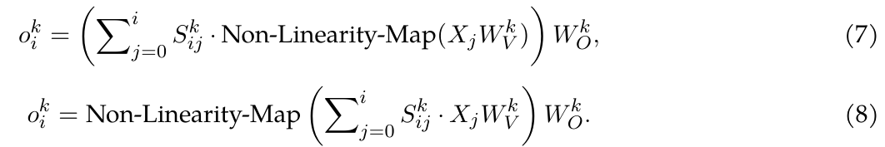
值得注意的是，在 G2 位置增加门控（表 3 第 3 行）对应第一种修改（公式 7），而在 G1 位置增加门控（第 4 行）或分组归一化（第 5 行）对应第二种修改（公式 8）。这也解释了为什么在 \(W_{O}\) 之后的 G5 位置增加门控或归一化没有效果（表 1 第 9 行）——它没有解决 \(W_{V}\) 与 \(W_{O}\) 之间缺乏非线性的问题。
对于 G1 处的加法门控，门控的输出经过 SiLU（表 3 第 4 行），同样引入了一定的非线性，这解释了观察到的性能增益，尽管其增益小于乘法门控。基于这些认识，我们开展了两个额外实验：（\(i\)）仅在 G1 位置增加 SiLU，不引入额外参数（表 3 第 6 行）。请注意，这一简单修改也能适度降低 PPL，但大多数基准分数保持不变。（ii）从加法门控中移除 SiLU，使 \(X_{j}\) 经过门控后的输出直接加到 G1 位置（表 3 第 7 行）。这进一步减小了加法门控的增益。
总之，有效门控变体带来的性能提升，很可能归因于在 \(W_{V}\) 与 \(W_{O}\) 之间引入了非线性。虽然在 G1 和 G2 位置应用门控都可以引入这种非线性，但两者产生的性能增益不同。这一差异促使我们进一步分析这两个位置上门控的影响。
2 请注意，先拼接不同头的输出再乘以 \(W_{O}\)，等价于在拼接之前先将每个头的输出乘以其对应的 \(W^{k}_{O}\)。
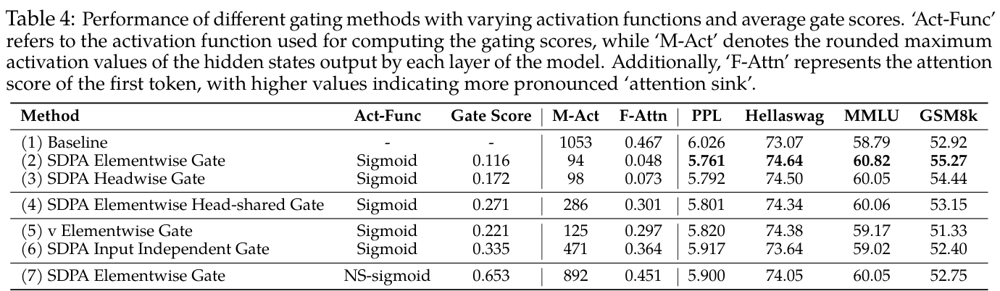
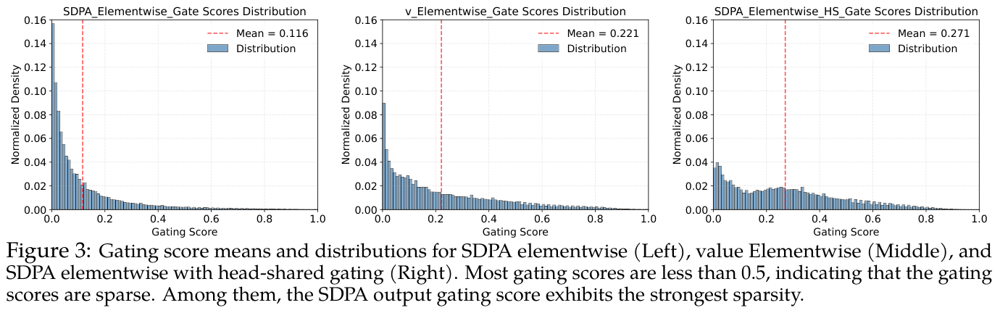
我们在语言建模测试数据上评估了在 value（G2）和 SDPA 输出（G1）位置应用门控的模型，并分析其门控分数（表 1，“Gate Score”列）。所有层的平均门控分数列于表 4，分数分布见图 3（逐层分数见附录 A.2）。主要观察包括：
（i）有效的门控分数具有稀疏性。SDPA 输出门控（逐元素／逐头）的平均门控分数最低。此外，SDPA 输出门控的分数分布高度集中在 0 附近，表明它具有显著稀疏性，与其更优的性能相一致。（ii）各头独立的稀疏性很重要。强制各 attention 头共享门控分数，会增大整体门控分数并减小性能增益。观察（i）和（ii）凸显出各头独立门控的重要性，这与先前研究一致：不同 attention 头会捕获输入的不同方面（Voita et al., 2019; Wang et al., 2021; Olsson et al., 2022; Wang et al., 2023）。
（iii）依赖查询很重要。value 门控（G2）的分数高于 SDPA 输出门控（G1），且性能更差。这表明，当门控分数的稀疏性依赖查询，而不是由 key 和 value 决定时，它更加有效。具体而言，SDPA 输出门控分数由当前 query 对应的隐藏状态生成（例如，公式 8 中的 Non-Linearity-Map 依赖 \(X_{i}\)），而 value 门控分数则由过去的 key 和 value 所对应的隐藏状态生成（例如，公式 7 中的 Non-Linearity-Map 依赖各个 \(X_{j}\)）。这意味着门控分数的稀疏性可能会过滤掉与查询无关的上下文信息。为进一步验证依赖查询的重要性，我们引入不依赖输入的门控：将形状为 \(q \times d_{k}\) 的可学习参数初始化为零，应用 sigmoid 函数，再将其与 SDPA 输出相乘。如第（6）行所示，不依赖输入的门控相比基线有所改善，这可能是由于引入了非线性。此外，较高的门控分数进一步说明，有效的稀疏性应当依赖输入。
（iv）稀疏性较弱的门控效果更差。为进一步验证门控分数稀疏性的重要性，我们从门控公式中减弱稀疏性。具体而言，我们将 sigmoid 函数替换为修改后的非稀疏（Non-Sparse，NS）版本：
NS-sigmoid(x) = 0.5 + 0.5 · sigmoid(x)，
它将门控分数约束在 [0.5, 1.0] 之间。这确保在引入非线性的同时，移除门控分数的稀疏性。如表 4 第（7）行所示，NS-sigmoid 门控的增益小于 SDPA 输出 sigmoid 门控。在附录 A.2 中，我们更详细地讨论了稀疏门控分数如何影响 SDPA 隐藏状态的稀疏性（低于阈值的数值比例）。下一节将讨论不同稀疏程度对模型行为的影响，包括减少“attention sink”。
基于门控以依赖输入的方式为 SDPA 输出引入稀疏性这一观察，我们假设，该机制可以过滤掉与当前查询 token 无关的上下文，从而缓解 attention sink（Xiao et al., 2023; Sun et al., 2024）。为验证这一点，我们分析了 attention 分数的分布（在所有头上求平均），以及分配给第一个 token 的 attention 分数比例（图 2，表 4 的“F-Attn”列）。受隐藏状态中巨幅激活与 attention sink 相关讨论（Sun et al., 2024）的启发，我们还计算了各层隐藏状态最大激活值的均值，列于表 4 的“M-Act”列。更详细的逐层结果见附录 A.3。
我们可以观察到：（i）在 SDPA 输出（G1）处使用依赖查询的逐头或逐元素 sigmoid 门控，可以大幅减少分配给第一个 token 的 attention 分数，并减小巨幅激活。（ii）强制各头共享门控分数，或仅在 value 投影之后（G2）应用门控，能够减小巨幅激活，却不会减少第一个 token 的 attention 分数。这进一步强调了各头独立门控的重要性，并表明巨幅激活并非 attention sink 的必要条件。（iii）减弱门控对输入的依赖（第 6 行），或使用 NS-sigmoid 减弱稀疏性（第 7 行），都会加剧巨幅激活和 attention sink。
这些观察共同表明，在 SDPA 输出上应用依赖输入、各头独立的门控，可以引入显著稀疏性，从而缓解 attention sink。此外，SDPA 输出中的稀疏性能够减小模型内的巨幅激活，稀疏性越强，激活值越小。这可能解释了门控为何能提高训练稳定性：通过减小巨幅激活，模型在 BF16 训练期间受到数值误差影响的可能性更低（Budzinskiy et al., 2025）。我们还观察到，巨幅激活主要源于较早的层（例如第 5 层），这些层的 FFN 会输出较大的数值，这与 Yona et al.（2025）一致。一旦加入 residual stream，这些激活就会通过预归一化机制在后续层中传播。这与 sandwich normalization（Ding et al., 2021）提高训练稳定性的有效性相吻合（表 2，第 7 行）：对 FFN 输出应用 LayerNorm，可以防止这些大激活进入 residual stream。
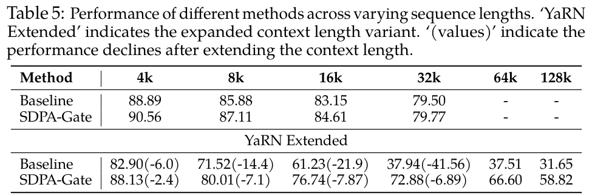
基于无 attention sink 的模式，我们评估 SDPA 门控在长上下文设置中的作用。具体而言，我们对在 3.5T token 上训练的模型扩展上下文长度。我们将 RoPE（Su et al., 2024）的 base 从 10k 增大至 1M，并在序列长度为 32k 的数据上继续训练额外的 80B token。由此得到上下文长度为 32k 的模型。随后，我们使用 YaRN（Peng et al., 2023）将上下文长度扩展至 128k。我们在 RULER 基准（Hsieh et al., 2024）上评估模型，结果汇总于表 5。我们观察到：（i）在 32k 设置下，带门控的模型略优于基线。这表明，在训练长度范围内，attention sink 现象可能不会损害模型的长上下文性能。（ii）通过 YaRN 将上下文长度扩展至 128k 后，基线模型和带门控模型在原有 32k 范围内的性能都下降了。这一观察与先前通过修改 RoPE 来扩展上下文长度的工作一致（Chen et al., 2023; Peng et al., 2023; Dong et al., 2025），尽管带门控模型的下降没有那么明显。（iii）在 64k 和 128k 上下文长度下，gated attention 模型显著优于基线。根据这些观察，我们假设，增加门控有助于模型适应上下文长度扩展。一种可能的解释是，基线模型依靠 attention sink 来调整 attention 分数分布。Dong et al.（2025）基于 attention 和隐藏状态分布推导了改变 RoPE 的影响。当通过 YaRN 等技术修改 RoPE base 时，attention sink 模式可能难以在不训练的情况下适应，导致性能明显下降。相比之下，带门控的模型主要依靠依赖输入的门控分数来控制信息流，因此对这类变化更稳健。
门控机制已在神经网络中得到广泛应用。LSTM（Hochreiter & Schmidhuber, 1997）和 GRU（Dey & Salem, 2017）等早期工作引入门控，以调节跨时间步的信息流，通过选择性地保留或丢弃信息来解决 gradient 消失／爆炸问题。Highway Networks（Srivastava et al., 2015）将这一概念扩展到 FFN，使极深架构能够成功训练。SwiGLU（Shazeer, 2020）将门控机制引入 Transformer 的 FFN 层，增强了其表达能力，并成为许多开源 LLM 的标准组件（Grattafiori et al., 2024; Yang et al., 2024a）。
若干 SSM 工作（Gu & Dao, 2023; Dao & Gu, 2024）以及线性 attention 工作，例如 FLASH（Hua et al., 2022）、RetNet（Sun et al., 2023）、Lightning Attention（Qin et al., 2024a;b; Li et al., 2025）和 Gated Delta Networks（Yang et al., 2024b），也引入门控模块来控制 token 混合模块的信息。Forgetting Transformer（Lin et al., 2025）在 softmax attention 输出上应用门控机制，并观察到显著的性能提升。虽然这些工作展示了门控的有效性，但其确切机制及有效原因仍有待全面探索。这有助于我们更广泛地认识门控在 RNN 之外的重要性，并促进更好利用门控独特优势的设计。例如，虽然 Switch Heads（Csordas et al., 2024b;a）、NSA（Yuan et al., 2025）和 MoSA（Piękos et al., 2025）使用基于 sigmoid 的门控（Csordas et al., 2023）进行选择，但进一步分离门控本身的贡献，可能提供有价值的认识。与在标准 Transformer 中加入类似门控机制的基线比较，可以更细致地认识它们所提出的选择机制是否有效。与我们的工作最接近的是 Quantizable Transformers（Bondarenko et al., 2023），该工作同样发现，在 softmax attention 中应用门控，可以缓解 BERT 和 ViT 等编码器模型中 attention 的极端集中，以及隐藏状态中的 outlier。该工作主要利用门控消除 outlier 以实现模型量化，而我们详细分析了多种门控变体，揭示了它们通过增强非线性和稀疏性，以及提高训练稳定性所带来的收益。基于这些认识，我们扩展了 gated attention 模型的规模，展示了门控的广泛适用性和影响。
Xiao et al.（2023）正式识别了“attention sink”现象，即某些特定 token 获得较大的 attention 分数。同样，Darcet et al.（2023）发现，在视觉 Transformer 中，一些冗余 token 充当“寄存器”，用来存储 attention 分数。随后，Sun et al.（2024）表明，与巨幅激活值相关的 token 同样会获得过多的 attention 分数。然而，我们的工作发现，在 value 投影输出处应用门控，可以消除巨幅激活，但 attention sink 依然存在，这说明巨幅激活并非 attention sink 的必要条件。同样，Gu et al.（2024）将 attention sink 描述为存储冗余 attention 分数、不包含有效信息的“键偏置”，并认为 softmax 固有的归一化依赖驱动了这种行为。对 softmax attention 进行修改的实验尝试，例如用未归一化的 sigmoid attention 替代 softmax（Ramapuram et al., 2024; Gu et al., 2024）、为 softmax attention 增加门控或裁剪（Bondarenko et al., 2023），以及修改 softmax 计算（Zuhri et al., 2025）和分母（Miller, 2023），都显示出缓解 attention sink 的潜力。我们的工作表明，即使在 3.5T token 上训练，SDPA 之后的稀疏门控也能消除稠密模型（1B 参数）和 MoE 模型（15B 参数）中的 attention sink。此外，我们揭示了消除 attention sink 对上下文长度扩展的潜在益处。
本研究系统考察了标准 softmax attention 中门控机制的作用，揭示了它们对性能、训练稳定性和 attention 动态的显著影响。通过对在最多 3.5T token 上训练的 15B MoE 模型和 1.7B 稠密模型的 30 多种变体进行大量实验比较，我们证明，在 SDPA 之后应用 sigmoid 门控能够带来最显著的提升。这一简单机制增强了非线性，引入依赖输入的稀疏性，并消除了“attention sink”等低效现象。此外，门控促进了上下文长度扩展，使模型无需重新训练即可有效泛化到更长序列。我们还发布了首批无 attention sink 的模型。我们相信，这些实验验证将为设计下一代先进基础模型铺平道路。
我们的工作主要通过一系列消融研究，分析 attention 门控的原因和影响。不过，我们也承认存在若干局限。非线性对 attention 动态以及整个训练过程的更广泛影响，仍未得到充分探索。虽然我们观察到，消除 attention sink 能够改善长上下文扩展场景下的性能，但我们没有从严格的理论层面解释，attention sink 如何影响模型泛化到更长序列的能力。
Joshua Ainslie, James Lee-Thorp, Michiel De Jong, Yury Zemlyanskiy, Federico Lebrón, and Sumit Sanghai. GQA：从多头 checkpoint 训练广义多查询 Transformer 模型. arXiv 预印本 arXiv:2305.13245, 2023.
Yelysei Bondarenko, Markus Nagel, and Tijmen Blankevoort. 可量化的 Transformer：通过帮助 attention 头不做任何事来消除 outlier. Advances in Neural Information Processing Systems, 36: 75067–75096, 2023.
Stanislav Budzinskiy, Wenyi Fang, Longbin Zeng, and Philipp Petersen. LLM 的数值误差分析. arXiv 预印本 arXiv:2503.10251, 2025.
Mark Chen, Jerry Tworek, Heewoo Jun, Qiming Yuan, Henrique Ponde de Oliveira Pinto, Jared Kaplan, Harri Edwards, Yuri Burda, Nicholas Joseph, Greg Brockman, Alex Ray, Raul Puri, Gretchen Krueger, Michael Petrov, Heidy Khlaaf, Girish Sastry, Pamela Mishkin, Brooke Chan, Scott Gray, Nick Ryder, Mikhail Pavlov, Alethea Power, Lukasz Kaiser, Mohammad Bavarian, Clemens Winter, Philippe Tillet, Felipe Petroski Such, Dave Cummings, Matthias Plappert, Fotios Chantzis, Elizabeth Barnes, Ariel Herbert-Voss, William Hebgen Guss, Alex Nichol, Alex Paino, Nikolas Tezak, Jie Tang, Igor Babuschkin, Suchir Balaji, Shantanu Jain, William Saunders, Christopher Hesse, Andrew N. Carr, Jan Leike, Josh Achiam, Vedant Misra, Evan Morikawa, Alec Radford, Matthew Knight, Miles Brundage, Mira Murati, Katie Mayer, Peter Welinder, Bob McGrew, Dario Amodei, Sam McCandlish, Ilya Sutskever, and Wojciech Zaremba. 评估在代码上训练的 LLM, 2021.
Shouyuan Chen, Sherman Wong, Liangjian Chen, and Yuandong Tian. 通过位置插值扩展 LLM 的上下文窗口, 2023. URL https://arxiv.org/abs/2306.15595.
Aakanksha Chowdhery, Sharan Narang, Jacob Devlin, Maarten Bosma, Gaurav Mishra, Adam Roberts, Paul Barham, Hyung Won Chung, Charles Sutton, Sebastian Gehrmann, 等。 PaLM：利用 Pathways 扩展语言建模. Journal of Machine Learning Research, 24(240):1–113, 2023.
Karl Cobbe, Vineet Kosaraju, Mohammad Bavarian, Mark Chen, Heewoo Jun, Lukasz Kaiser, Matthias Plappert, Jerry Tworek, Jacob Hilton, Reiichiro Nakano, 等。 训练验证器以解决数学应用题. arXiv 预印本 arXiv:2110.14168, 2021.
Robert Csordas, Kazuki Irie, and Jurgen Schmidhuber. 近似两层 FFN 以实现高效 Transformer. arXiv 预印本 arXiv:2310.10837, 2023.
Robert Csordas, Kazuki Irie, Jurgen Schmidhuber, Christopher Potts, and Christopher D Manning. MoEUT：MoE 通用 Transformer. arXiv 预印本 arXiv:2405.16039, 2024a.
Robert Csordas, Piotr Piekos, Kazuki Irie, and Jurgen Schmidhuber. SwitchHead：利用MoEattention加速 Transformer. Advances in Neural Information Processing Systems, 37:74411–74438, 2024b.
Damai Dai, Chengqi Deng, Chenggang Zhao, RX Xu, Huazuo Gao, Deli Chen, Jiashi Li, Wangding Zeng, Xingkai Yu, Y Wu, 等。 DeepSeekMoE：迈向 MoE 语言模型中的极致专家专门化. arXiv 预印本 arXiv:2401.06066, 2024.
Francesco D’Angelo, Maksym Andriushchenko, Aditya Vardhan Varre, and Nicolas Flammarion. 为什么现代深度学习需要权重衰减？ Advances in Neural Information Processing Systems, 37: 23191–23223, 2024.
Tri Dao and Albert Gu. Transformer 是 SSM：通过结构化状态空间对偶性实现广义模型和高效算法. In Forty-first International Conference on Machine Learning, ICML 2024, Vienna, Austria, July 21-27, 2024. OpenReview.net, 2024. URL https://openreview.net/forum?id=ztn8FCR1td.
Timothée Darcet, Maxime Oquab, Julien Mairal, and Piotr Bojanowski. 视觉 Transformer 需要寄存器. arXiv 预印本 arXiv:2309.16588, 2023.
Rahul Dey and Fathi M Salem. GRU 神经网络的门控变体. In 2017 IEEE 60th international midwest symposium on circuits and systems (MWSCAS), pp. 1597–1600. IEEE, 2017.
Ming Ding, Zhuoyi Yang, Wenyi Hong, Wendi Zheng, Chang Zhou, Da Yin, Junyang Lin, Xu Zou, Zhou Shao, Hongxia Yang, and Jie Tang. CogView：通过 Transformer 掌握文本到图像生成, 2021.
Zican Dong, Junyi Li, Jinhao Jiang, Mingyu Xu, Wayne Xin Zhao, Bingning Wang, and Weipeng Chen. LongReD：通过恢复蒸馏缓解长上下文 LLM 的短文本性能退化. ArXiv, abs/2502.07365, 2025. URL https://arxiv.org/abs/2502.07365.
Aaron Grattafiori, Abhimanyu Dubey, Abhinav Jauhri, Abhinav Pandey, Abhishek Kadian, Ahmad Al-Dahle, Aiesha Letman, Akhil Mathur, Alan Schelten, Alex Vaughan, 等。 Llama 3 模型家族. arXiv 预印本 arXiv:2407.21783, 2024.
Albert Gu and Tri Dao. Mamba：利用选择性状态空间进行线性时间序列建模. arXiv 预印本 arXiv:2312.00752, 2023.
Xiangming Gu, Tianyu Pang, Chao Du, Qian Liu, Fengzhuo Zhang, Cunxiao Du, Ye Wang, and Min Lin. 语言模型中的 attention sink 何时出现：一种实证视角. arXiv 预印本 arXiv:2410.10781, 2024.
Dan Hendrycks, Collin Burns, Steven Basart, Andy Zou, Mantas Mazeika, Dawn Song, and Jacob Steinhardt. 衡量大规模多任务语言理解. arXiv 预印本 arXiv:2009.03300, 2020.
Sepp Hochreiter and Jürgen Schmidhuber. 长短期记忆. Neural computation, 9(8):1735–1780, 1997.
Cheng-Ping Hsieh, Simeng Sun, Samuel Kriman, Shantanu Acharya, Dima Rekesh, Fei Jia, Yang Zhang, and Boris Ginsburg. RULER：你的长上下文语言模型的真实上下文长度是多少？ arXiv 预印本 arXiv:2404.06654, 2024.
Weizhe Hua, Zihang Dai, Hanxiao Liu, and Quoc V. Le. 在线性时间内实现 Transformer 的质量. In International Conference on Machine Learning, ICML 2022, 17-23 July 2022, Baltimore, Maryland, USA, volume 162 of Proceedings of Machine Learning Research, pp. 9099–9117. PMLR, 2022. URL https://proceedings.mlr.press/v162/hua22a.html.
Yuzhen Huang, Yuzhuo Bai, Zhihao Zhu, Junlei Zhang, Jinghan Zhang, Tangjun Su, Junteng Liu, Chuancheng Lv, Yikai Zhang, Yao Fu, 等。 C-Eval：面向基础模型的多层次、多学科中文评估套件. Advances in Neural Information Processing Systems, 36, 2024.
Aonian Li, Bangwei Gong, Bo Yang, Boji Shan, Chang Liu, Cheng Zhu, Chunhao Zhang, Congchao Guo, Da Chen, Dong Li, 等。 MiniMax-01：利用 Lightning Attention 扩展基础模型. arXiv 预印本 arXiv:2501.08313, 2025.
Haonan Li, Yixuan Zhang, Fajri Koto, Yifei Yang, Hai Zhao, Yeyun Gong, Nan Duan, and Timothy Baldwin. CMMLU：衡量中文大规模多任务语言理解, 2023.
Zhixuan Lin, Evgenii Nikishin, Xu Owen He, and Aaron Courville. Forgetting Transformer：带遗忘门控的 softmax attention. arXiv 预印本 arXiv:2503.02130, 2025.
Sam McCandlish, Jared Kaplan, Dario Amodei, and OpenAI Dota Team. 大 batch 训练的经验模型. arXiv 预印本 arXiv:1812.06162, 2018.
Evan Miller. Attention 存在差一错误, 2023. URL https://www.evanmiller.org/Attention-is-off-by-one.html.
Guido Montufar, Razvan Pascanu, Kyunghyun Cho, and Yoshua Bengio. 论深度神经网络的线性区域数量, 2014. URL https://arxiv.org/abs/1402.1869.
Catherine Olsson, Nelson Elhage, Neel Nanda, Nicholas Joseph, Nova DasSarma, Tom Henighan, Ben Mann, Amanda Askell, Yuntao Bai, Anna Chen, 等。 上下文学习与归纳头. arXiv 预印本 arXiv:2209.11895, 2022.
Bowen Peng, Jeffrey Quesnelle, Honglu Fan, and Enrico Shippole. YaRN：高效扩展 LLM 的上下文窗口. arXiv 预印本 arXiv:2309.00071, 2023.
Piotr Piękos, Róbert Csordás, and Jürgen Schmidhuber. 混合稀疏 attention：通过专家选择路由实现基于内容的可学习稀疏 attention, 2025. URL https://arxiv.org/abs/2505.00315.
Zhen Qin, Weigao Sun, Dong Li, Xuyang Shen, Weixuan Sun, and Yiran Zhong. Lightning Attention-2：处理 LLM 中无限序列长度的免费午餐. arXiv 预印本 arXiv:2401.04658, 2024a.
Zhen Qin, Weigao Sun, Dong Li, Xuyang Shen, Weixuan Sun, and Yiran Zhong. 长度多变，速度不变：利用 Lightning Attention 进行高效语言建模. arXiv 预印本 arXiv:2405.17381, 2024b.
Zihan Qiu, Zeyu Huang, Bo Zheng, Kaiyue Wen, Zekun Wang, Rui Men, Ivan Titov, Dayiheng Liu, Jingren Zhou, and Junyang Lin. 细节中的魔鬼：论用于训练专门化 MoE 模型的负载均衡损失实现, 2025. URL https://arxiv.org/abs/2501.11873.
Jason Ramapuram, Federico Danieli, Eeshan Dhekane, Floris Weers, Dan Busbridge, Pierre Ablin, Tatiana Likhomanenko, Jagrit Digani, Zijin Gu, Amitis Shidani, 等。 Sigmoid 自 attention 的理论、分析与最佳实践. arXiv 预印本 arXiv:2409.04431, 2024.
Noam Shazeer. GLU 变体改进 Transformer. arXiv 预印本 arXiv:2002.05202, 2020.
Rupesh Kumar Srivastava, Klaus Greff, and Jürgen Schmidhuber. Highway Networks（高速公路网络）. arXiv 预印本 arXiv:1505.00387, 2015.
Jianlin Su, Murtadha Ahmed, Yu Lu, Shengfeng Pan, Wen Bo, and Yunfeng Liu. RoFormer：通过 RoPE 增强 Transformer. Neurocomputing, 568:127063, 2024.
Mingjie Sun, Xinlei Chen, J Zico Kolter, and Zhuang Liu. LLM 中的巨幅激活. arXiv 预印本 arXiv:2402.17762, 2024.
Yutao Sun, Li Dong, Shaohan Huang, Shuming Ma, Yuqing Xia, Jilong Xue, Jianyong Wang, and Furu Wei. Retentive Network：面向 LLM 的 Transformer 后继者, 2023. URL https://arxiv.org/abs/2307.08621.
Sho Takase, Shun Kiyono, Sosuke Kobayashi, and Jun Suzuki. 不再出现尖峰：稳定 LLM 的预训练. arXiv 预印本 arXiv:2312.16903, 2023.
A Vaswani. Attention 就是你所需要的一切. Advances in Neural Information Processing Systems, 2017.
Elena Voita, David Talbot, Fedor Moiseev, Rico Sennrich, and Ivan Titov. 分析多头自 attention：专门化的头承担主要工作，其余头可以剪枝. arXiv 预印本 arXiv:1905.09418, 2019.
Hanrui Wang, Zhekai Zhang, and Song Han. SpAtten：通过级联 token 与头剪枝实现高效稀疏 attention 架构. In 2021 IEEE International Symposium on High-Performance Computer Architecture (HPCA), pp. 97–110. IEEE, 2021.
Hongyu Wang, Shuming Ma, Li Dong, Shaohan Huang, Dongdong Zhang, and Furu Wei. DeepNet：将 Transformer 扩展到 1,000 层, 2022. URL https://arxiv.org/abs/2203.00555.
Zekun Wang, Jingchang Chen, Wangchunshu Zhou, Haichao Zhu, Jiafeng Liang, Liping Shan, Ming Liu, Dongliang Xu, Qing Yang, and Bing Qin. SmartTrim：通过自适应 token 与 attention 剪枝实现高效 VLM. arXiv 预印本 arXiv:2305.15033, 2023.
Guangxuan Xiao, Yuandong Tian, Beidi Chen, Song Han, and Mike Lewis. 利用 attention sink 实现高效流式语言模型. arXiv 预印本 arXiv:2309.17453, 2023.
An Yang, Baosong Yang, Beichen Zhang, Binyuan Hui, Bo Zheng, Bowen Yu, Chengyuan Li, Dayiheng Liu, Fei Huang, Haoran Wei, 等。 Qwen2.5 技术报告. arXiv 预印本 arXiv:2412.15115, 2024a.
Songlin Yang, Jan Kautz, and Ali Hatamizadeh. Gated Delta Networks：通过 delta 规则改进 Mamba2. arXiv 预印本 arXiv:2412.06464, 2024b.
Tianzhu Ye, Li Dong, Yuqing Xia, Yutao Sun, Yi Zhu, Gao Huang, and Furu Wei. 差分 Transformer. arXiv 预印本 arXiv:2410.05258, 2024.
Itay Yona, Ilia Shumailov, Jamie Hayes, Federico Barbero, and Yossi Gandelsman. 解释 LLM 中的 token 重复现象. arXiv 预印本 arXiv:2503.08908, 2025.
Jingyang Yuan, Huazuo Gao, Damai Dai, Junyu Luo, Liang Zhao, Zhengyan Zhang, Zhenda Xie, YX Wei, Lean Wang, Zhiping Xiao, 等。 Native Sparse Attention：与硬件对齐且原生可训练的稀疏 attention. arXiv 预印本 arXiv:2502.11089, 2025.
Rowan Zellers, Ari Holtzman, Yonatan Bisk, Ali Farhadi, and Yejin Choi. HellaSwag：机器真的能补完你的句子吗？ arXiv 预印本 arXiv:1905.07830, 2019.
Aohan Zeng, Xiao Liu, Zhengxiao Du, Zihan Wang, Hanyu Lai, Ming Ding, Zhuoyi Yang, Yifan Xu, Wendi Zheng, Xiao Xia, 等。 GLM-130B：开放的双语预训练模型. arXiv 预印本 arXiv:2210.02414, 2022.
Biao Zhang and Rico Sennrich. 均方根层归一化. Advances in Neural Information Processing Systems, 32, 2019.
Barret Zoph, Irwan Bello, Sameer Kumar, Nan Du, Yanping Huang, Jeff Dean, Noam Shazeer, and William Fedus. ST-MoE：设计稳定且可迁移的稀疏专家模型. arXiv 预印本 arXiv:2202.08906, 2022.
Zayd M. K. Zuhri, Erland Hilman Fuadi, and Alham Fikri Aji. Softpick：通过修正的 softmax 消除 attention sink 与巨幅激活, 2025. URL https://arxiv.org/abs/2504.20966.
在本节中，我们给出与 Switch Heads 相关的详细实验。Switch Head 论文表明，在 attention 中引入稀疏激活——每个 token 通过可学习的 sigmoid 路由，从 key／value／output 专家池中选择 top-k 专家——能够使模型取得与基线相当的结果。这表明，在 Switch Head 框架内，专家参数和激活参数都有益，在相同总参数预算下，越多越好。
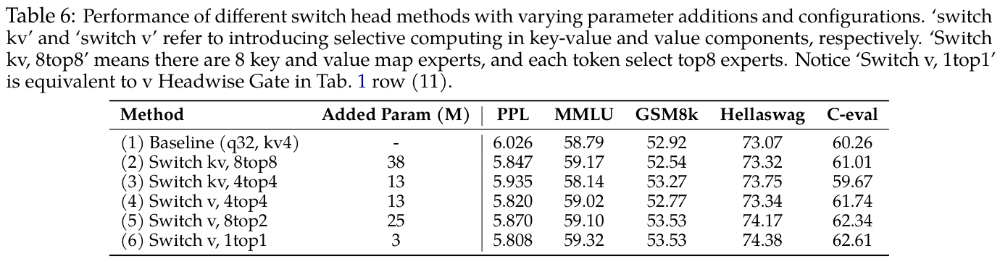
观察表 6 的结果，我们发现一个有趣的趋势：虽然增加激活的 kv 专家数量（保持相同的专家参数设置）似乎能够一定程度改善 PPL（第 4 行对比第 5 行），但整体基准表现的增益并不明显。值得注意的是，基准分数和 PPL 的最佳结果均由“Switch v 1top1”（第 6 行）取得；如前所述，这相当于直接在 value 层输出上应用 sigmoid 门控。这些发现引出了一个有趣的问题：这些实验中观察到的性能提升，主要由什么驱动？它们表明，门控本身的引入对这一方法的有效性起着重要作用。
在本节中，我们分析门控分数稀疏性对 attention 输出的影响。首先，我们考察在隐藏状态上应用门控之前和之后的 SDPA 输出均值。具体而言，我们计算了各层 G1 之前和之后的 Y 与 Y′ 的绝对值均值，如图 4 所示。我们还加入了不使用门控的基线结果以供比较。结果表明：（1）经过门控后，隐藏状态的均值从 0.71 降至 0.05，这与普遍较小的门控分数相对应；（2）门控后的隐藏状态与基线非常接近，表明门控可能与 attention sink 发挥相似作用，用于过滤无关信息。
我们进一步分析门控前后低于特定阈值的隐藏状态比例，如图 5 所示。结果表明：（1）经过门控后，在不同阈值下，隐藏状态的稀疏性均显著增加。由于平均门控分数已经较小，隐藏状态乘以一个较小的数，自然会使部分值降至阈值以下。因此，（2）我们进一步将门控前的隐藏状态乘以平均门控分数，并观察到稀疏性的增幅小于原始门控。这表明，稀疏门控分数增强了隐藏状态的稀疏性。
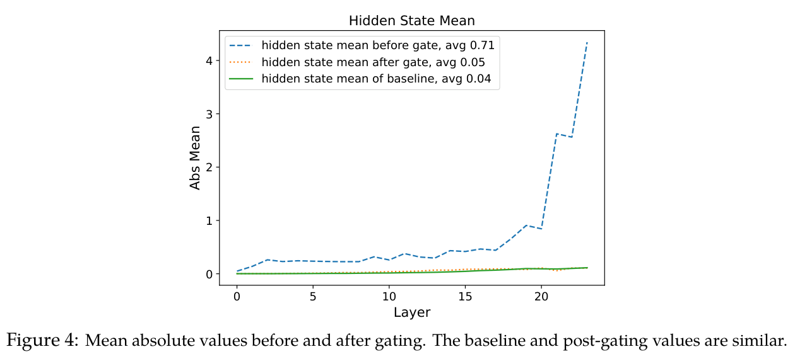
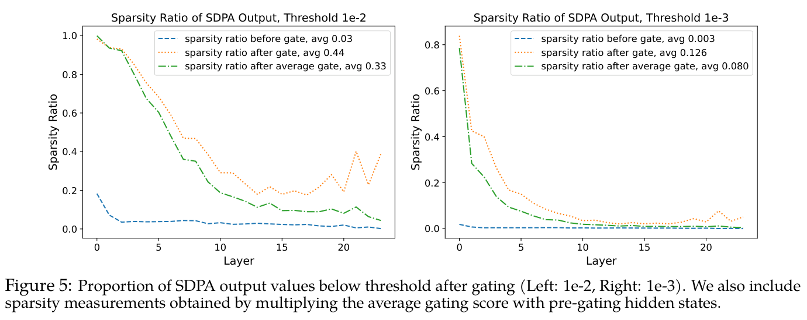
在本节中，我们比较和分析模型中巨幅激活与 attention sink（第一个 token 的 attention 分数）的存在情况。根据结果，我们观察到：
对于基线（第 1 行），第 6 层 FFN 的输出中包含巨幅激活，随后加入 residual stream，使较大的激活值持续存在于后续层的残差中。相应地，显著的 attention sink 现象从第 6 层开始出现。在 SDPA 输出上应用门控后（第 2 行），网络较早层的输出整体保持较小，巨幅激活随着层深增加逐渐增长。值得注意的是，网络中的任何一层都没有观察到显著的 attention sink 现象。
当仅在 value 层应用门控时（第 3 行），模型呈现出与第 2 行相似的巨幅激活。不过，仍然存在一定程度的 attention sink 现象。这表明，巨幅激活并非 attention sink 出现的必要条件。当强制不同头共享门控分数（第 4 行），或修改门控激活函数以抑制稀疏性（第 5 行）时，门控引入的稀疏性减弱。在这些情况下，巨幅激活和 attention sink 都变得与基线中的表现相近。
这些观察表明，在 attention 机制中引入充分的稀疏性，可能有助于缓解巨幅激活的出现。不过，要全面理解稀疏性、巨幅激活和 attention sink 之间的相互作用，尤其是在扩展到更深、更大模型的背景下，仍需要进一步研究。
在本节中，我们以 SDPA 输出门控为基线（第 1 行，逐元素／逐头），分析两种额外约束下门控分数的分布：（1）强制不同头使用相同的门控分数（第 2 行，左）；（2）限制门控分数的最小值（第 2 行，接下页
（接上页）右）。当强制不同头共享门控分数时，大多数层的门控分数都会增大。这表明，不同头需要不同的稀疏程度，凸显出各头独立门控机制的重要性。
我们观察到，增加 sandwich normalization（Ding et al., 2021）和门控机制，都能够消除巨幅激活并提高训练稳定性。这促使我们探索，是否可以用更简单的方法防止残差中的大激活。具体而言，我们引入裁剪操作，在 attention 层和 FFN 层的输出进入残差连接之前对其进行约束，将其值限制在（−clip）范围内。不过，我们发现，无论将 clip 值设为 300 还是 100，模型在学习率为 8e-3 时仍会遇到收敛问题。这表明，预归一化模型训练的不稳定性并非仅由残差中的大激活引起。任何层产生较大输出，都可能导致稳定性问题，说明仍需进一步研究训练不稳定的根本原因。
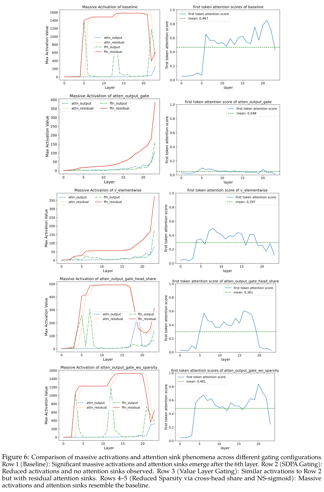
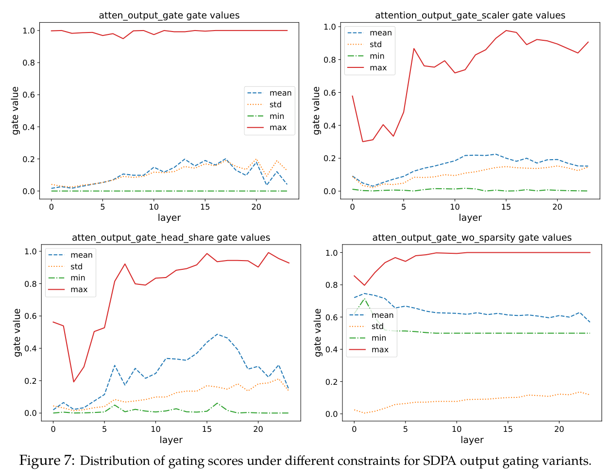